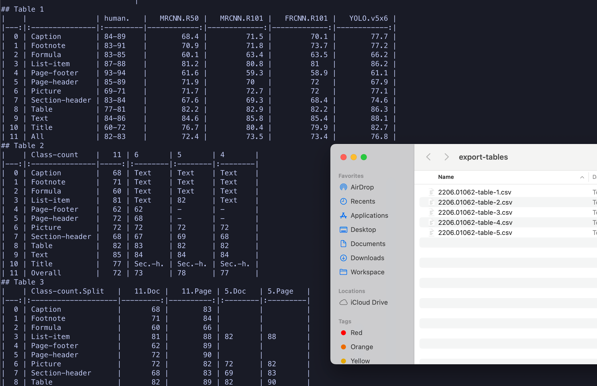
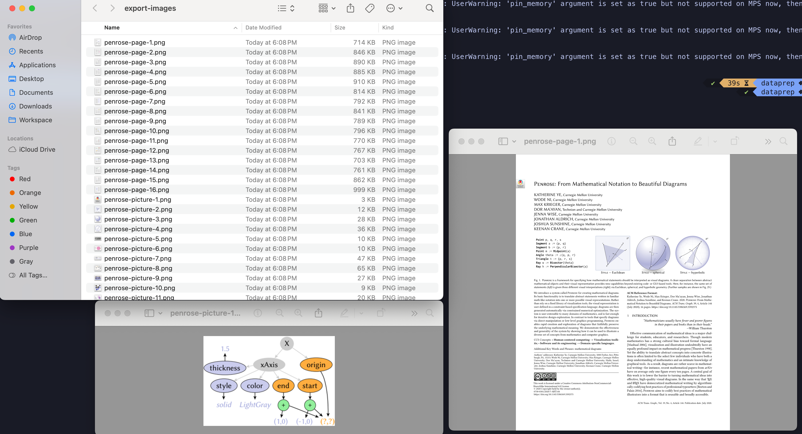

Parsing Documents with Images and Tables
Once you convert an input document into the unified DoclingDocument object, you can then programatically traverse the object tree and extract items like headings, paragraphs, code blocks, images, tables, cells and textual items.
Pre-requisites
-
The Docling Python library must be installed as outlined in the previous sections using
pipin a Python virtual environment -
Git CLI to clone the sample data files from GitHub
-
Visual Studio Code, or other editors to edit Python code
Lab: Exporting Tables
-
If you have not already done it, clone the Git repository containing the sample documents that should be converted, to a folder of your choice.
$ git clone https://github.com/RedHatQuickCourses/genai-apps.git -
All the sample input files and code is in a folder called
dataprep. Change to this folder in the terminal.$ cd genai-apps/dataprep -
If you have previously created a virtual environment and installed Docling, activate the venv.
$ source venv/bin/activateYour prompt should change to indicate that you are now running in an isolated virtual environment.
-
Inspect the
export-tables.pyfile in VS Code. The input document is in thesample-data/batchfolder. The output documents will be placed in the/tmp/export-tablesfolder.INPUT_FILE = "sample-data/batch/2206.01062.pdf" OUTPUT_DIR = "/tmp/export-tables/" -
In the
main()method, instantiate a defaultDocumentConverterclass instance and convert the input document:... doc_converter = DocumentConverter() conv_res = doc_converter.convert(input_file) ... -
On the
DoclingDocumentobject, Docling provides atablesmethod that returns a list ofTableItemobjects representing all the tables in the document. We take advantage of Docling’s integration with the popularPandaslibrary to export aDataFrameobject that we can convieniently query and manipulate.... for table_ix, table in enumerate(conv_res.document.tables): table_df = table.export_to_dataframe() ... -
Finally, we export the in-memory representation of the
DataFrameobjects to a CSV file.... table_df.to_csv(element_csv_filename) ... -
Run the program. You can safely ignore any warnings emitted. You should see some table output in markdown format.
$ (venv) python3 export-tables.py -
Once the program completes, you should see CSV files in the
/tmp/export-tablesfolder corresponding to each of the tables in the document with a*.csvextension.Figure 1. Tables exported to CSV files
Lab: Exporting Images and Image Snapshots
-
Inspect the code in the
export-images.pyfile. The input file for this lab issample-data/penrose.pdf, a document that has a number of embedded images. The images are extracted and saved to the/tmp/export-imagesfolder after processing. -
In the
main()method, we customize the pipeline by asking Docling to generate images of each page in the input document as well as extract images from it.... pipeline_options = PdfPipelineOptions() pipeline_options.images_scale = 2.0 pipeline_options.generate_page_images = True pipeline_options.generate_picture_images = True ... -
Once the document is converted, we iterate over each page in the document, and take a snapshot image of each page and save it in the
/tmp/export-imagesfolder. Once again, Docling’s native integration with the popular PythonPillowlibrary provides a nice convienient abstraction for us to export the image objects to different formats.... for page_no, page in conv_res.document.pages.items(): page_no = page.page_no page_image_filename = output_path / f"{out_file_name}-page-{page_no}.png" with page_image_filename.open("wb") as fp: page.image.pil_image.save(fp, format="PNG") ... -
Next, we iterate over the hierarchial tree of nested objects in the
DoclingDocumentobject and extract images (PictureItemelements) from it. We serialize each of the extracted images in the/tmp/export-imagesfolder.... for element, _level in conv_res.document.iterate_items(): if isinstance(element, PictureItem): picture_counter += 1 element_image_filename = ( output_path / f"{out_file_name}-picture-{picture_counter}.png" ) ... -
Continue using the virtual environment from the previous lab. If you are not in the virtual environment, active it and then run the
export-images.pyfile.$ (venv) python3 export-images.py -
Verify that the extracted page images and the individual images in the document are exported in the
/tmp/export-imagesfolder.Figure 2. Images exported to PNG files